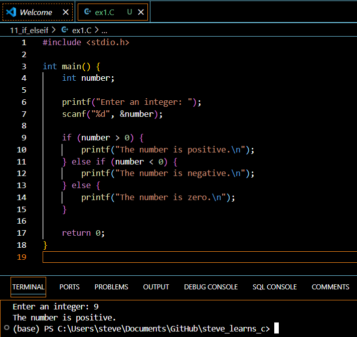
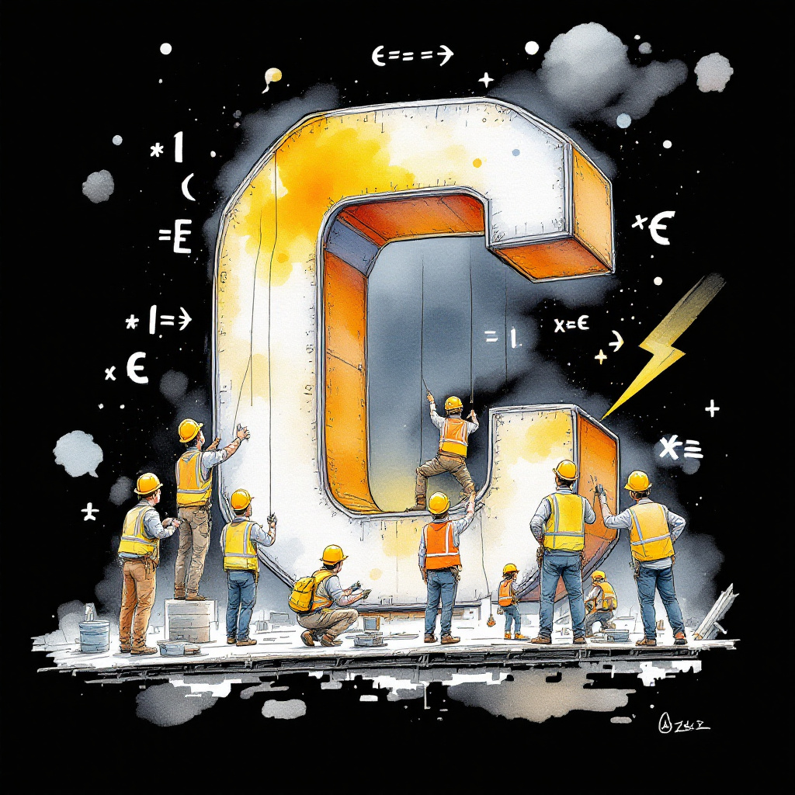

Introduction
In C programming, the ability to make decisions and control the flow of a program is essential. One of the most fundamental ways to do this is by using conditional statements like if and else if. These statements allow you to test data and execute different blocks of code based on the outcome of those tests. In this article, we’ll explore how to use if and else if statements effectively, along with an overview of relational operators in C.
Understanding If and Else If Statements
The if statement in C is used to test a condition. If the condition is true, the code block following the if statement is executed. If the condition is false, the code block is skipped.
Here’s the basic syntax of an if statement:
if (condition) {
// code to be executed if the condition is true
}The else if statement is used to test additional conditions if the previous if condition is false. You can chain multiple else if statements together to test a series of conditions.
Here’s an example of using if and else if statements:
int score = 85;
if (score >= 90) {
printf("Grade: A\n");
} else if (score >= 80) {
printf("Grade: B\n");
} else if (score >= 70) {
printf("Grade: C\n");
} else {
printf("Grade: D\n");
}In this example, the program tests the value of the score variable and prints the corresponding grade based on the conditions.
C Relational Operators
To test data in C, you often use relational operators. These operators compare two values and return a boolean result (true or false). Here’s a table of the relational operators in C:
| Operator | Description |
|---|---|
== |
Equal to |
!= |
Not equal to |
> |
Greater than |
< |
Less than |
>= |
Greater than or equal to |
<= |
Less than or equal to |
You can use these operators in combination with if and else if statements to make decisions based on the comparison of values.
Your Turn!
Now it’s time for you to practice using if and else if statements along with relational operators. Here’s a problem for you to solve:
Write a program that takes an integer as input and prints whether it is positive, negative, or zero.
Solution
#include <stdio.h>
int main() {
int number;
printf("Enter an integer: ");
scanf("%d", &number);
if (number > 0) {
printf("The number is positive.\n");
} else if (number < 0) {
printf("The number is negative.\n");
} else {
printf("The number is zero.\n");
}
return 0;
}
Quick Takeaways
ifstatements are used to test a condition and execute a block of code if the condition is true.else ifstatements allow you to test additional conditions if the previousifcondition is false.- Relational operators (
==,!=,>,<,>=,<=) are used to compare values and return a boolean result. - Combining
if,else if, and relational operators enables you to make decisions and control the flow of your C programs based on the comparison of data.
Conclusion
Understanding how to use if and else if statements, along with relational operators, is crucial for writing effective and efficient C programs. By mastering these concepts, you’ll be able to create programs that can make decisions and respond appropriately based on the input and conditions you specify. Keep practicing and exploring more complex scenarios to further enhance your skills in testing data with if and else if statements in C.
FAQs
- Q: Can you have multiple
ifstatements without anelse if?
A: Yes, you can have multiple independent if statements without using else if. Each if statement will be evaluated separately.
- Q: Is it necessary to use an
elsestatement afterelse if?
A: No, the else statement is optional. You can have a series of if and else if statements without an else at the end.
- Q: Can you nest
ifstatements inside otheriforelse ifstatements?
A: Yes, you can nest if statements inside other if or else if statements to create more complex decision-making structures.
- Q: What happens if multiple conditions in an
if-else ifladder are true?
A: If multiple conditions in an if-else if ladder are true, only the code block corresponding to the first true condition will be executed. The rest will be skipped.
- Q: Can you use logical operators (
&&,||) with relational operators?
A: Yes, you can combine relational operators with logical operators to create more complex conditions in your if and else if statements.
References
C if…else Statement. (n.d.). Retrieved from https://www.programiz.com/c-programming/c-if-else-statement
C Conditional Statement: IF, IF Else and Nested IF Else with Example. (n.d.). Retrieved from https://www.guru99.com/c-if-else-statement.html
We’d love to hear your feedback and thoughts on this article! Feel free to leave a comment below or share this post with others who might find it helpful. Happy coding!
Happy Coding! 🚀
]
You can connect with me at any one of the below:
Telegram Channel here: https://t.me/steveondata
LinkedIn Network here: https://www.linkedin.com/in/spsanderson/
Mastadon Social here: https://mstdn.social/@stevensanderson
RStats Network here: https://rstats.me/@spsanderson
GitHub Network here: https://github.com/spsanderson